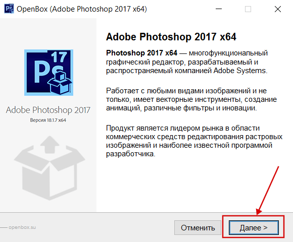
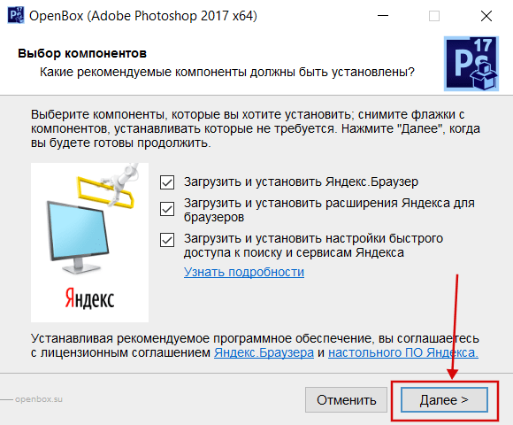

Установить Photoshop CC 2017 проще чем последующие за ней версии, с последующими версиями компания увеличила системные требования как к железу так и к OS. Официальная лицензия всего 30 дней, не беда читаем установку потом активацию. Установка Photoshop CC процесс простой, версия официальная, по этому проблем и багов в работе Фотошопа должно быть минимум.
Устанавливая Photoshop CC 2017 данным способом вы получите последнюю обновленную версию лучшего редактора. Те кто хочет установить данную версию на Win xp, не чего не выйдет, версия начинает поддержку с OS Windows 7 и выше.
Установка Photoshop 2017:
Программа поддерживает — Windows 7 — 10
Скачать Adobe Photoshop 2017 x64
Размер файла: 888 Мб
1. Ознакомьтесь с информацией и нажмите «Далее».

Нажмите «Далее», или снимите галочки с рекомендуемого ПО и нажмите «Далее». Если снять все галочки, рекомендуемое ПО не установится!

2. Дождитесь распаковки файлов. После распаковки файлов будет автоматическое отключение интернета, на всем протяжении установки он будет отключен и включится после окончания установки, если вы начали установку интернет можно включить вручную, либо дождитесь конца установки. (вынужденная мера)
{kind=link}
3. Можно установить как x32 так и x64 на один ПК, конфликтов не каких не будет!
{kind=link}
Нажмите продолжить когда будите готовы и дождитесь конца установки.
По умолчанию папка установки — C:\Program Files\Adobe\Adobe Photoshop CC 2017
Если вам не нужно приложение Adobe Application Manager а только один Фотошоп вы его можете вообще удалить через установку удаление программ. А значок (ярлык) Фотошопа вывести на рабочий стол, для этого зайдите по адресу C:\Program Files\Adobe\Adobe Photoshop CC 2017 найдите там Photoshop.exe нажмите правой кнопкой мыши выберите пункт в меню отправить -> Рабочий стол (создать ярлык) (см. скриншот ниже).
{kind=link}
Установка довольно таки простая, внимательно все сделайте и у вас получится установить и использовать бесплатно. Процесс установки закончен, следующий шаг это активация Adobe Photoshop CC 2017
Внимание! Инструкция была сформирована под управление Windows 7.
Очень жаль что только русскоязычная версия, когда выбираешь установить английский язык выдает ошибку.
А можно установить на внешний жесткий диск, будет работать?
Будем пробовать…
Скажите пожалуйста, можно с одного компьютера переустановить программы Adobe на другой. Это бесплатно? Я ежемесячно плачу 300р. Первым комьютером пользоваться не буду, там их удалю
Почему может не устанавливаться фотошоп по этой схеме.. идет загрузка то до 45%, то до 85% и потом все, ошибка побробнее, открываю ссылку там типо не удалось установить.. то один номер ошибки, то другой и текст типо не получил доступ к С потому что он занят другим процессом. Каким блин процессом, все уже закрыто давно.. ох, тяжко быть профаном(((
На ограничение к диску может влиять контроль учетных записей попробуйте понизить его до минимума и снова попробовать установить. Или попробовать установить на диск D
Спасибо! Все получилось
атлично
ктруто
Он пароль не принимает:с
Как понять «должен содержатт символы как в верхнем, так и в нижнем регистре»?
большие и маленькие буквы
Не получилось пропатчить. Скачался Ps СС2015, а в списке его не оказалось. Печально.Может за 30 дней демо появится патч и на эту версию.
ещё не пробовал.спасибоюю
Здравствуйте. Помимо фотошопа, мне нужен и иллюстратор и индизайн. Действуя по вашей инструкции, эти приложения тоже активируются или для них как-то отдельно нужно делать все?
Спасибо.
Надеюсь всё получится при установке! Спасибо за программку)))
Буду очень признателен если все получится. Спасибо!